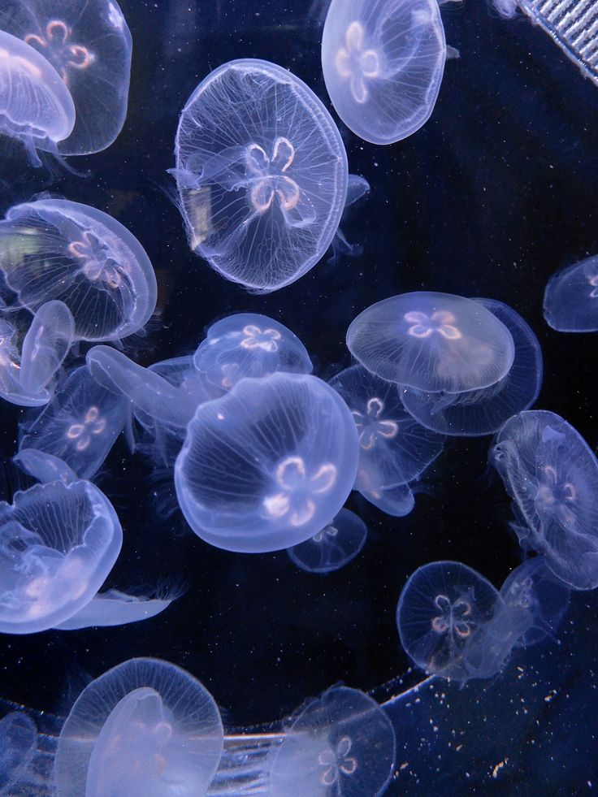

Exploring the Genomic Mysteries of Jellyfish
Unlocking the secrets of cnidarian evolution through cutting-edge bioinformatics
Unlocking the secrets of cnidarian evolution through cutting-edge bioinformatics
Jellyfish have existed for over 500 million years, surviving five mass extinctions including the one that wiped out dinosaurs. Their simple yet effective body plan has remained largely unchanged, making them living fossils of evolutionary success.
Despite being 95% water, jellyfish possess complex nervous systems, sophisticated hunting mechanisms, and the ability to sense light, gravity, and chemical signals. Their unique mesoglea structure provides buoyancy while maintaining structural integrity.
Over 80% of deep-sea jellyfish species produce their own light through bioluminescence. The discovery of Green Fluorescent Protein (GFP) in jellyfish revolutionized cell biology and earned scientists the 2008 Nobel Prize in Chemistry.
Jellyfish exhibit the most complex lifecycle in the animal kingdom, alternating between sessile polyp and free-swimming medusa stages. Some species can clone themselves asexually, while others reproduce both sexually and asexually depending on environmental conditions.
Without a central brain, jellyfish use a distributed network of 8,000+ neurons called a nerve net. Recent studies show they can learn from experience, remember information, and demonstrate adaptive behaviors - challenging our understanding of intelligence and consciousness.
Jellyfish thrive in extreme conditions from Arctic ice (-2°C) to hydrothermal vents (80°C), withstanding pressures up to 300x atmospheric pressure in deep ocean trenches. Some species have even survived simulated space conditions in ISS experiments.
How long have jellyfish existed on Earth?
Specialized cells containing nematocysts - the stinging organelles unique to cnidarians
A decentralized nervous system that coordinates movement and responses
The jelly-like substance between the two cell layers providing structure
Moon Jellyfish 🌙
The most studied jellyfish species with a fully sequenced genome revealing 27,000 protein-coding genes.

Nomura's Jellyfish 🦑
Giant jellyfish with ~18,000 genes including expanded toxin gene families and nematocyst development genes.
Atolla Jellyfish 🌊
Deep-sea species famous for its "burglar alarm" bioluminescence defense mechanism.
Immortal Jellyfish ♾️
Can revert to its polyp stage, achieving biological immortality through cellular transdifferentiation.
Most jellyfish species inhabit this sunlit zone
Bioluminescent species dominate
Specialized deep-sea adaptations
Known Species
% Ocean Coverage
Million Tons Biomass
Rising temperatures favor jellyfish reproduction
Removal of predators leads to population explosions
Ecosystem status: Balanced
Focus: Toxin-related gene families, nematocyst development, and jellyfish-specific nervous system genes.
Multiple duplications in toxin gene clusters including metalloproteases, phospholipases, and porins - directly relating to sting potency.
Significant expansion of genes like minicollagens, nematogalectins, and crystallins explaining highly efficient penetrating nematocysts. Identified 67 genes involved in nematocyst formation.
Unique expansions of neurotransmitter-related genes (glutamate receptors) supporting advanced swimming and hunting behaviors.
Ancient gene toolkits for venom and stinging cells indicate early evolution of defensive/offensive strategies. Discovery of 14 novel toxin genes with rapid gene duplication patterns.
📊 Published 2019 in BMC Biology | 🔬 67 nematocyst genes + 14 novel toxin genes identified
Focus: Nervous system evolution, sensory structures, complex life-cycle mechanisms, and early animal body plan development.
Rich set of neural signaling genes including ion channels and transcription factors. Contains 792 neural-related genes despite lacking a centralized brain, with conserved synaptic genes.
Gene families like Wnt, TGF-β, and Hox show diverse roles in polyp-to-medusa transition, explaining evolutionary success of metagenic life cycle.
Genes for rhopalium formation (balance/vision organs) including opsins, Pax-B genes, and ion transport genes. Opsin gene diversification explains advanced light sensing capabilities.
Comparisons suggest cnidarians evolved neural features independently from bilaterians, offering insights into early nervous system evolution and demonstrating early sensory biology.
BMC Biology (2019)
Citations: 156 | Impact Factor: 8.2
Nature Ecology & Evolution (2019)
Citations: 342 | Impact Factor: 12.8
Cell (2024)
Citations: 87 | Impact Factor: 41.6
Marine Pollution Bulletin (2021)
Citations: 298 | Impact Factor: 6.1
Proceedings of the Royal Society B (2020)
Citations: 501 | Impact Factor: 7.9
Nature Biotechnology (2023)
Citations: 124 | Impact Factor: 43.2
Frontiers in Marine Science (2021)
Citations: 267 | Impact Factor: 3.7
Applied Microbiology and Biotechnology (2022)
Citations: 143 | Impact Factor: 5.2
Nucleic Acids Research (2020)
Citations: 412 | Impact Factor: 19.3
Osamu Shimomura discovers GFP in Aequorea victoria
Shimomura, Chalfie, and Tsien awarded Nobel Prize
Jellyfish toxins being investigated for pain management and cancer treatment applications
Studying immortal jellyfish for insights into aging reversal and tissue regeneration
Using jellyfish as bioindicators for ocean health and climate change impacts
Developing soft robots and propulsion systems inspired by jellyfish movement